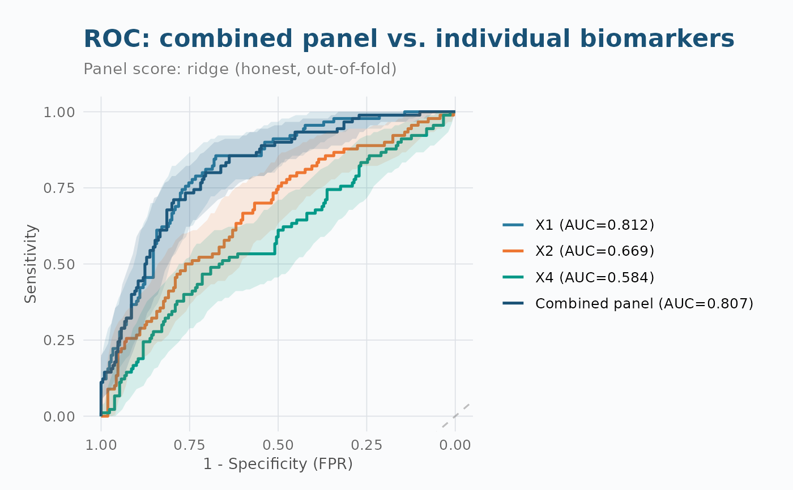

ROC curve for a fitted biomarker panel vs. its individual components
Source:R/plot-panel.R
plot_roc_panel.RdPlots the empirical ROC curve of a combined panel score – the honest out-of-fold score by default – together with the ROC curves of its leading individual biomarkers, for a direct visual read on whether combining biomarkers improved discrimination.
Usage
plot_roc_panel(
panel,
X,
y,
positive = NULL,
biomarkers = NULL,
n_top = 3L,
use = c("cv", "train"),
add_ci = TRUE,
boot_n = 500,
seed = NULL
)Arguments
- panel
An
aucmat_panelobject fromfit_auc_panel().- X
Numeric matrix – the same data used to fit
panel(or a superset of its columns).- y
Binary outcome – the same outcome used to fit
panel.- positive
Optional positive class label (see
aucmat()).- biomarkers
Character vector of individual biomarkers to overlay. Default: the top
n_toppanel components by their own univariate AUC.- n_top
Number of individual biomarkers to overlay when
biomarkersis not supplied. Default 3.- use
"cv"(default) plots the honest cross-validated panel score;"train"plots the in-sample (optimistic) score. Falls back to"train"with a warning ifpanelwas fit withn_folds < 2.- add_ci
Add bootstrap sensitivity confidence ribbons. Default
TRUE– setFALSEfor a faster, ribbon-free plot.- boot_n
Bootstrap replicates for CI ribbons. Default 500.
- seed
Optional seed for CI bootstrap reproducibility.
Examples
# \donttest{
set.seed(42)
sim <- simulate_auc_matrix(n = 300, prevalence = 0.3,
target_aucs = c(0.85, 0.75, 0.65, 0.60),
correlation = 0.3, structure = "exchangeable")
X <- as.matrix(sim$data[, 1:4]); y <- sim$data$truth
panel <- fit_auc_panel(X, y, method = "ridge", n_folds = 5, seed = 1)
plot_roc_panel(panel, X, y)
#> Warning: Using `size` aesthetic for lines was deprecated in ggplot2 3.4.0.
#> ℹ Please use `linewidth` instead.
#> ℹ The deprecated feature was likely used in the pROC package.
#> Please report the issue at <https://github.com/xrobin/pROC/issues>.

# }